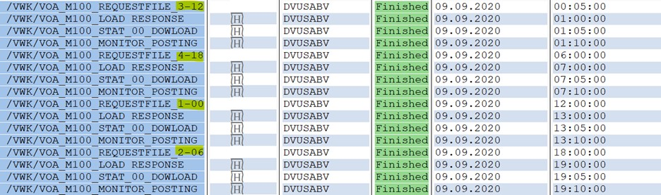
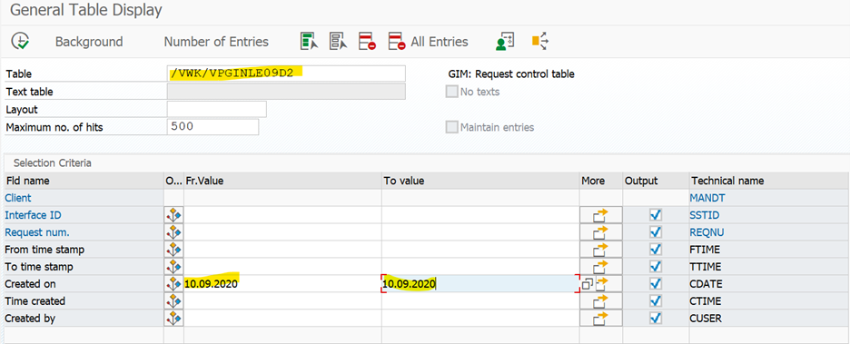

JOB MONITORING - Chattanooga
M100
M100 é um processo de consumo executado para materiais não jit.
> Horário:
Este processo a cada 6 horas às 00: 05,6: 00,12: 00,18: 00 CET. (Horário de sistema)
1. Sequência correta para M100 :
/VWK/VOA_M100_REQUESTFILE* (esse job irá solicitar o arquivo da equipe do PROLOG na pasta CUST_IP)
/VWK/VOA_M100_LOAD RESPONSE* (Este Job irá processar o arquivo solicitado DFX.KMPR62.CYCCNTRS.xxxxxxxxxxxxxxxx)
/VWK/VOA_M100_STAT_00_DOWLOAD
/VWK/VOA_M100_MONITOR_POSTING*
2. Ordem dos trabalhos
/ VWK / VOA_M100_REQUESTFILE 3-12 será executado às 00:05 CET
/ VWK / VOA_M100_REQUESTFILE 4-18 será executado às 6:00 CET
/ VWK / VOA_M100_REQUESTFILE 1-00 será executado às 12:00 CET
/ VWK / VOA_M100_REQUESTFILE 2-06 será executado às 18:00 CET
Os Jobs acima são os Jobs que solicitam os arquivos para o PROLOG, e que serão executados a cada 6 horas de acordo com o horário do sistema.

Agora, se virmos o / VWK / VOA_M100_REQUESTFILE 3-12, ele será executado às 00:05
Em seguida, vem a / VWK / VOA_M100_LOAD RESPONSE, que será executada após 1 hora.
Em seguida, / VWK / VOA_M100_STAT_00_DOWLOAD que será executado após 5 minutos.
E então / VWK / VOA_M100_MONITOR_POSTING, que será executado após 5 minutos.
Este mesmo formato será seguido para todas as 4 variantes destacadas na imagem acima, ou seja,
3-12, 4-18, 1-00, 2-06.
2. Function of the Jobs.
/ VWK / VOA_M100_REQUESTFILE - Este JOB solicitará o arquivo da equipe de PROLOG, e o arquivo irá chegar na pasta CUST_IP.
Esse arquivo solicitado você pode ver no SE16N (T- Code) na tabela / VWK / VPGINLE09D2
Coloque a data e execute-a.
